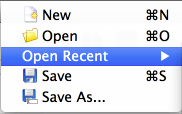
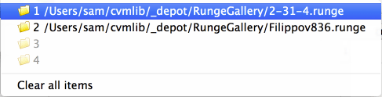
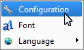
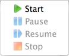
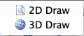

Here you can:
- Start new file (new system to solve) by using Ctrl N (Cmd N)
combination.
- Open existing Runge file by using Ctrl O (Cmd O) combination.
- Open recently used Runge file by using this sub-menu:

- Save current Runge file by using Ctrl S (Cmd S) combination.
- Save current Runge file with different name.
Runge file stores the system you entered and all solutions and their
properties.
Windows and Linux:  Mac:
Here you can:
- Choose Runge configuration file. On Mac use main "Runge" menu,
item "Preferences". Use it only if you want to add your own algorithms
(aka “solvers”). Keep default Runge*.xml configuration otherwise.
- Choose font for entering expressions.
- Choose language (restart required). Currently English and Russian are
supported only.

Here you can:
- Start solving your system.
- Puse it if it’s started.
- Resume it if it’s paused.
- Stop it if it’s started.

Call it to open 2D or 3D Drawer window.
Call it to open Runge Manual.